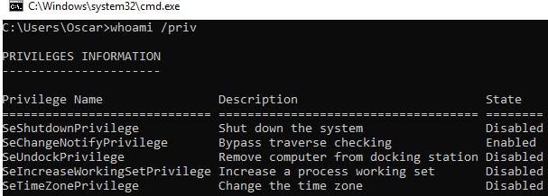

0x04 – Proof of concept
To abuse the driver loading privilege, a PoC application has been created in order to automate the procedure described above.
A starting point is a non-privileged user (test) to which the privilege “Load and unload device drivers” has been assigned.
As discussed earlier, initially the user will be assigned a restricted token, which does not include the SeLoadDriverPrivilege privilege.

If you have an interactive session, you can perform the elevation token elevation by accepting the UAC prompt, otherwise you should use some UAC bypassing technique.
In this specific case we assume that there is an interactive session in the system. By using the tool elevate, a new terminal with an associated unrestricted token can be spawned, after accepting the UAC prompt.
As you can see the privilege “SeLoadDriverPrivilege” is present in the user’s access token, however it is disabled.

At this point we can use the PoC tool EOPLOADDRIVER (https://github.com/TarlogicSecurity/EoPLoadDriver/), which will allow us to:
- Enable the SeLoadDriverPrivilege privilege
- Create the registry key under HKEY_CURRENT_USER (HKCU) and set driver configuration settings
- Execute the NTLoadDriver function, specifying the registry key previously created
The tool can be invoked as shown below:
EOPLOADDRIVER.exe RegistryKey DriverImagePath
The RegistryKey parameter specifies the registry key created under HKCU (“Registry User{NON_PRIVILEGED_USER_SID}”, while the DriverImagePath specifies the location of the driver in the file system.

It is possible to verify the driver was loaded successfully using the DriverView tool.